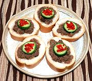

|
Chicken Livers Peri-PeriSouth Africa / Mozambique / California | ||||
| Makes: Effort: Sched: DoAhead: |
20 app ** 45 min Part |
A very tasty and attractive appetizer. The "California" part is my presentation. This recipe is a very simple version of a dish variously made in South Africa. See also Comments. | |||
|
1 10 1/2 2 1/2 2 ------ ar ar |
# oz t T t T --- |
Chicken Livers Onion Peri-peri Powder (1) Brandy Salt Oil -- Serving Soft Rolls (2) Garnish (3) |
PREP - (15 min)
|